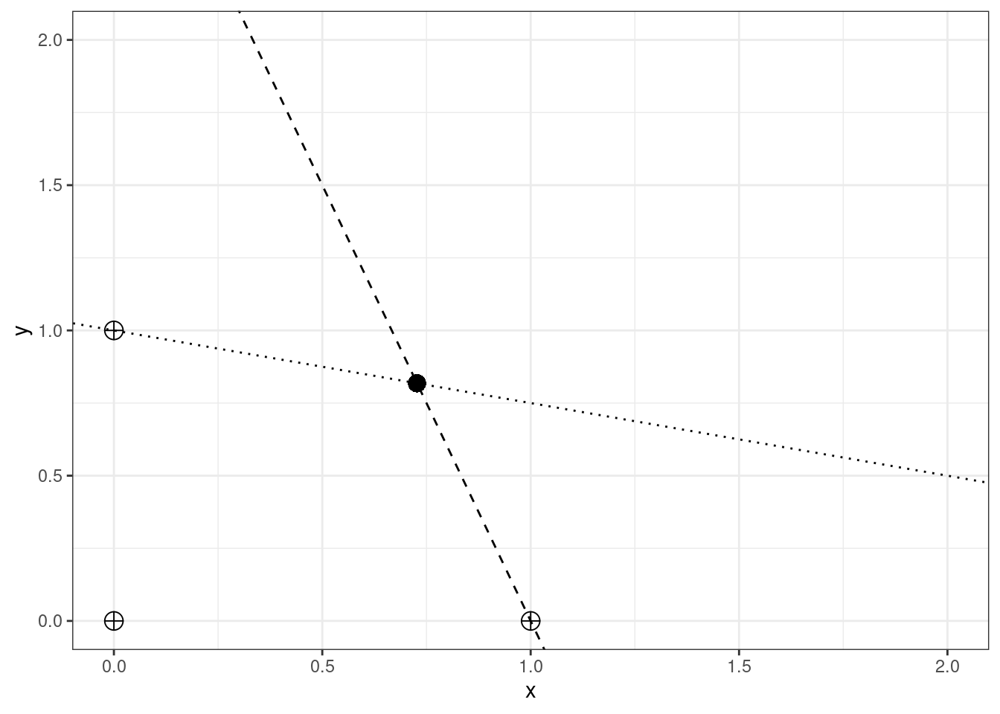
Models for two populations
Lotka-Volterra competition
To start our exploration of more complex models, we consider two populations (\(X\) and \(Y\)), growing logistically on their own, that interact competitively:
\[ \begin{cases} \dfrac{dX}{d\tau} = X(r_1 - B_{11} X - B_{12}Y)\\ \dfrac{dY}{d\tau} = Y(r_2 - B_{21} X - B_{22}Y)\\ \end{cases} \]
Where all parameters are positive; the \(r_i\) are the intrinsic growth rates, and \(B_{ij}\) measures how much the growth of \(i\) is decreased when adding a unit of population \(j\).
Matrices and vectors
A matrix \(A\) is a rectangular array of numbers (the entries of the matrix, \(A_{ij}\)). For this class, we will consider matrices with either real entries (\(A_{ij} \in \mathbb R; A_{ij} = \alpha\)), or complex entries (\(A_{ij} \in \mathbb C; A_{ij}=\alpha + i \beta\)). The size of the matrix is given by its number of rows \(n\) and its number of columns \(m\). To show the size explicitly, we use \(A_{n \times m}\). If \(n = m\) the matrix is square.
A (column) vector \(b\) is a matrix with a single column (i.e., size \(n \times 1\)), and a row vector \(a^T\) is of size \(1 \times m\). We use \({}^T\) to denote transposition, an operation that turns the rows into columns and vice versa: \((A^T)_{ij} = A_{ji}\); if \(A_{n \times m}\), then \(A^{T}_{m \times n}\).
Basic operations that can be performed with matrices:
Two matrices can be added only if they have the same size \(A + B = C\), with \(C_{ij} = A_{ij} + B_{ij}\).
Two matrices can be multiplied if the number of columns of the first matrix matches the number of rows of the second matrix: \(A_{n \times m} B_{m \times l} = C_{n \times l}\) with \(C_{ij} = \sum_{k = 1}^{m} A_{ik} B_{kj}\). In general, \(AB \neq BA\): matrices do not generally commute.
If two matrices have the same size, we can also take the Hadamard (element-by-element) product \(A \circ B = C\), with \(C_{ij} = A_{ij} B_{ij}\).
In R, a vector can be defined by concatenation v <- c(1,2,3), and a matrix by reshaping a vector M <- matrix(c(1,2,3,4), 2, 2). Note that entries are filled by column; if you want to fill them by row use M <- matrix(c(1,2,3,4), 2, 2, byrow = TRUE). The Hadamard product is coded as *, and the matrix multiplication as %*%
We can gather the variables and the parameters into two vectors and a matrix:
\[ Z = (X, Y)^T\quad r = (r_1, r_2)^T\quad B = \begin{pmatrix} B_{11} & B_{12}\\ B_{21} & B_{22} \end{pmatrix} \]
Thus, the dynamics can be written as:
\[ \dfrac{d Z_i}{d\tau} = Z_i (r_i - \sum_j B_{ij} Z_j) \]
or, in vector form:
\[ \dfrac{dZ}{d\tau} = D(Z)(r - BZ) \]
Where \(D(Z)\) is a diagonal matrix, with \(Z\) on the diagonal, and zeros elsewhere.
Non-dimensionalization
We define:
\[ x = c_1 X \quad y = c_2 Y \quad t = c_3 \tau \]
obtaining:
\[ \begin{cases} \dfrac{dx}{dt} = x(c_3 r_1 - c_1 c_3 B_{11} x - c_2 c_3 B_{12}y)\\ \dfrac{dy}{dt} = y(c_3 r_2 - c_1 c_3 B_{21} x - c_2 c_3 B_{22}y)\\ \end{cases} \]
A convenient choice is:
\[ c_3 = \dfrac{1}{r_1}\quad c_1 = \dfrac{r_1}{B_{11}}\quad c_2 = \dfrac{r_1}{B_{22}} \]
Yielding:
\[ \begin{cases} \dfrac{dx}{dt} = x\left(1 - x - \dfrac{B_{12}}{B_{22}}y \right)\\ \dfrac{dy}{d\tau} = y\left(\dfrac{r_2}{r_1} - \dfrac{B_{21}}{B_{11}} x - y \right)\\ \end{cases} \]
We define the ratio of intrinsic growth rates \(\rho = r_2 / r_1\), the ratio between the effect of \(y\) on the growth of \(x\) and the effect on itself \(A_{12} = B_{12} / B_{22}\), and similarly \(A_{21} = B_{21} / B_{11}\), obtaining:
\[ \begin{cases} \dfrac{dx}{dt} = x\left(1 - x - A_{12 }y \right)\\ \dfrac{dy}{d\tau} = y\left(\rho - A_{21} x - y \right)\\ \end{cases} \]
Equilibria
The system has a trivial equilibrium \((x^\star, y^\star) = (0,0)\), in which both species are absent. If \(y\) is absent, we obtain the marginal equilibrium \((x^\star, y^\star) = (1,0)\), and if \(x\) is absent, we have \((x^\star, y^\star) = (0, \rho)\). Finally, we can have a coexistence equilibrium, as long as the two terms in parenthesis are simultaneously zero:
\[ \begin{cases} 1-x^\star-A_{12}y^\star = 0\\ \rho - A_{21} x^\star - y^\star = 0 \end{cases} \]
Solving the first equation for \(x^\star\), we obtain \(x^\star = 1 - A_{12} y^\star\); plugging this solution into the second equation yields:
\[ \begin{aligned} \rho - A_{21} + A_{12}A_{21} y^\star - y^\star &= 0\\ y^\star &= \dfrac{\rho - A_{21}}{1 - A_{12}A_{21}} \end{aligned} \] and correspondingly:
\[ x^\star = \dfrac{1 - A_{12} \rho}{1 - A_{12}A_{21}} \]
If both values of \(x^\star\) and \(y^\star\) are positive, we have a coexistence equilibrium, if not, then the point lies outside the nonnegative orthant \(\mathbb R^{2}_{0+}\), and thus cannot be reached by the dynamics.
Solving linear systems
In the equations above, either \(x\) (\(y\)) is zero, or the term in parenthesis is zero. If we define:
\[ z = (x,y)^T \quad s = (1, \rho)^T \quad A = \begin{pmatrix} 1 & A_{12}\\ A_{21} & 1 \end{pmatrix} \]
we have that both terms in parenthesis are simultaneously zero whenever:
\[ Az^\star = s \]
You can solve a system of linear equations by inverting the matrix \(A_{n \times n}\). A matrix \(A\) is called invertible if there is a matrix \(B\) such that:
\[ AB = BA = I_n \] where \(I_n\) is the identity matrix, a matrix with zero everywhere but the diagonal, and with the entries on the diagonal being all 1. The identity matrix is the neutral matrix for multiplication: \(AI = IA = A\).
If such a matrix \(B\) exists, it is called the inverse of \(A\), written as \(A^{-1}\). If a matrix is not invertible, it is called singular. For matrices with real or complex entries, the necessary and sufficient condition for invertibility is that the determinant of the matrix \(\det A \neq 0\).
The determinant of a \(2 \times 2\) matrix \(A\) can be computed as:
\[ A = \begin{pmatrix} a & b \\ c & d \end{pmatrix}\quad \det A = ad - bc \]
Computing a matrix inverse is typically quite involved. For a \(2 \times 2\) matrix, you can write:
\[ A^{-1} = \dfrac{1}{ad - bc}\begin{pmatrix} d & -b \\ -c & a \end{pmatrix} \]
For the Lotka-Volterra system we have:
\[ \det A = 1 - A_{12} A_{21} \]
when the determinant is not zero, then
\[ \begin{aligned} A z^\star &= s\\ A^{-1} Az^\star &= A^{-1}s\\ I z^\star &= A^{-1}s\\ z^\star &= A^{-1}s\\ z^\star &= \dfrac{1}{1-A_{12}A_{21}}\begin{pmatrix} 1 & -A_{21}\\ -A_{12} &1 \end{pmatrix} \begin{pmatrix} 1\\ \rho \end{pmatrix}\\ z^\star &= \dfrac{1}{1-A_{12}A_{21}}\begin{pmatrix} 1 - A_{21} \rho\\ \rho - A_{12} \end{pmatrix} \end{aligned} \]
In R, you can solve a system of equation using solve(A, b) where A is a square, invertible matrix, and b is a vector of appropriate size.
Thus, the model has three or four equilibria, depending on the parameters. Another way to see this is to think about the values of \(y\) making \(dx/dt = 0\), and viceversa.
Zero-growth isoclines
Take the first equation, and set it to zero:
\[ x\left(1 - x - A_{12 }y \right) = 0 \]
equality is obtained when either \(x =0\) or \(y = (1-x)/ A_{12}\). This equation defines a line in the \((x,y)\) plane, called the phase plane. Similarly, if we take the second equation
\[ y\left(\rho - A_{21} x - y \right) = 0 \]
we see that this is zero whenever \(y = 0\) or when \(y = \rho - A_{21}x\), another line in the phase plane. If the two lines meet in the positive quadrant, then we have the possibility of coexistence.
For example, take \(\rho = 1\), \(A_{12} = 1/3\) and \(A_{21} = 1/4\):
Each species grows at points that are below its zero-growth isocline, and declines at points that are above it. Thus, for each point in the phase plane we can determine the general direction of the trajectories:
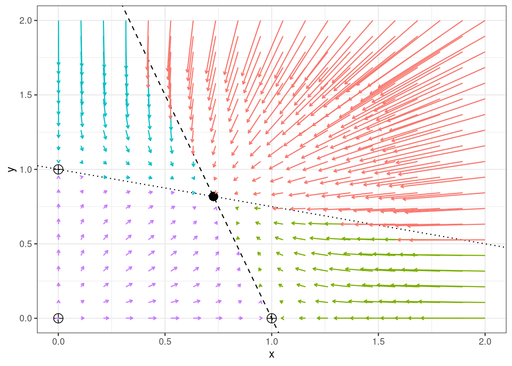
We can use these arrows to classify the stability of the equilibria. For example, around \((0,0)\) arrows move away from the point; it is thus an unstable equilibrium. Similarly, the two marginal points have arrows pointing away from them, and are thus unstable; around the coexistence equilibrium, all arrows point back to it, indicating stability.
In fact, we can show trajectories converging to the coexistence equilibrium:
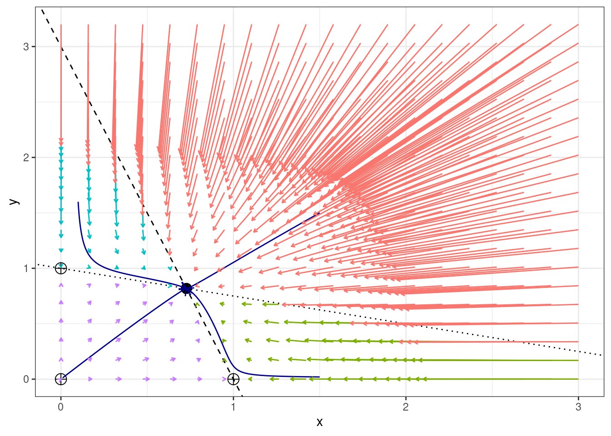
Depending on the value of the parameters, we have four cases; two in which the two lines do not meet in the positive orthant; and two cases in which they do.
The isocline of zero growth for population \(x\) intercepts the x-axis at 1 and the y-axis at \(1/A_{12}\); the isocline of zero growth for population \(y\) intercepts the x-axis at \(\rho / A_{21}\) and the y-axis at \(\rho\).
- If \(1 < \rho / A_{21}\) and \(\rho > 1/A_{12}\), the two isoclines do not meet in the positive orthant; the isocline for \(y\) is above that for \(x\); hence \(y\) will keep growing while \(x\) declines; eventually \(y\) will displace \(x\).
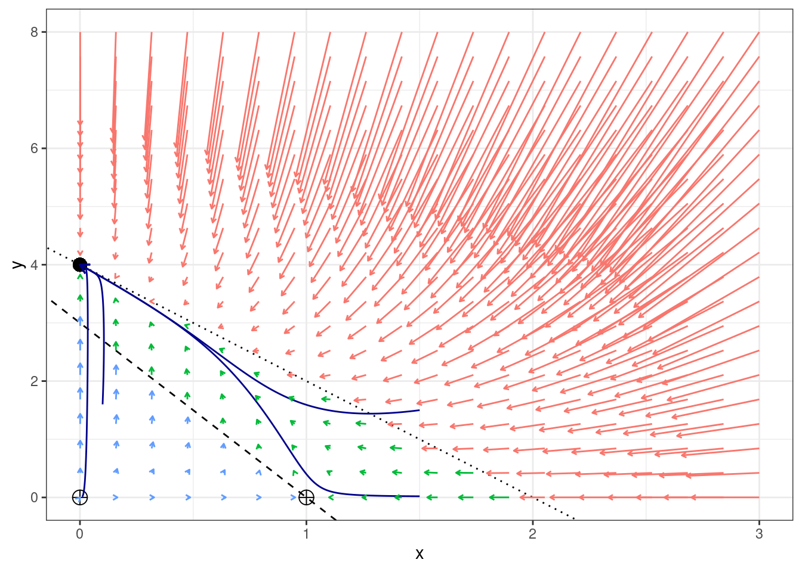
- If \(1 > \rho / A_{21}\) and \(\rho < 1/A_{12}\), the two isoclines do not meet in the positive orthant; the isocline for \(x\) is above that for \(y\); hence \(x\) will keep growing while \(y\) declines; eventually \(x\) will displace \(y\).
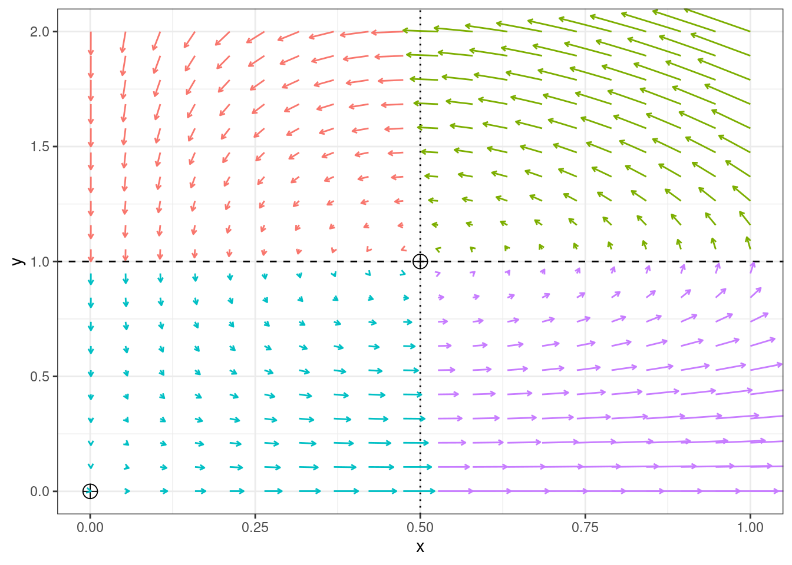
- If \(1 < \rho / A_{21}\) and \(\rho < 1/A_{12}\), the two isoclines meet in the positive orthant. Each species can invade the other when the other species is at its marginal equilibrium. The coexistence equilibrium is stable.
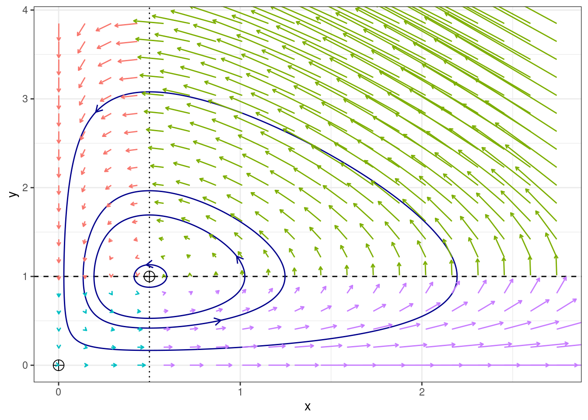
- If \(1 > \rho / A_{21}\) and \(\rho > 1/A_{12}\), the two isoclines meet in the positive orthant. No population can invade the other when the other species is at its marginal equilibrium. The two marginal equilibria are (locally) stable. This is a case of bistability: depending on the initial conditions, we will end in one or the other equilibrium.
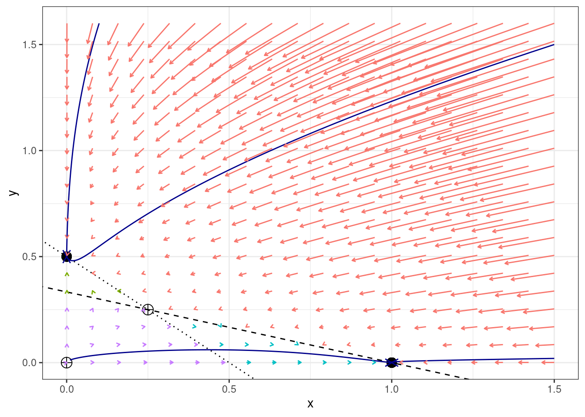
Exercise: Classify points using isoclines
Classify the equilibria by analyzing the flow in the phase plane:
a)
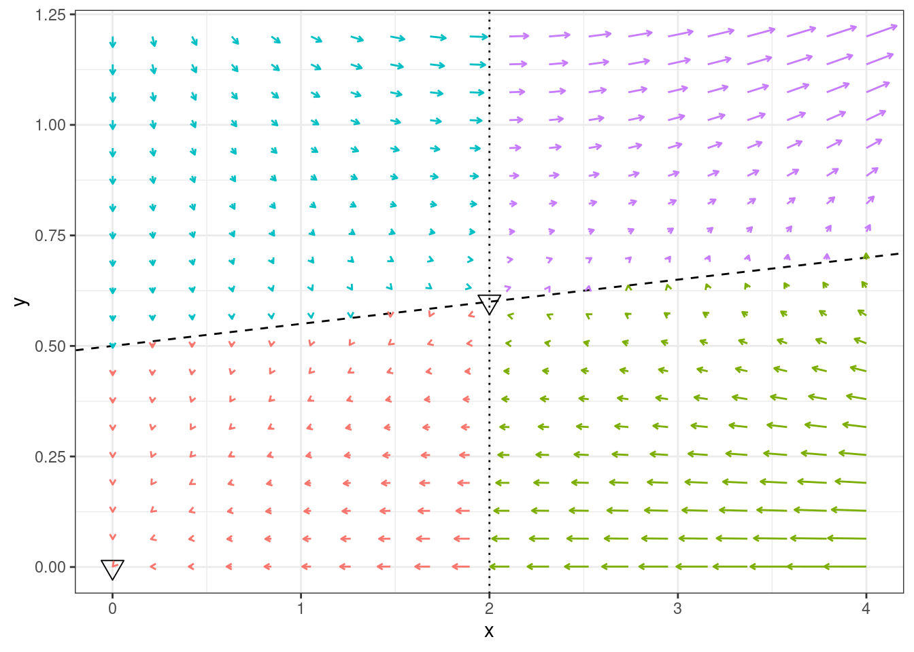
b)
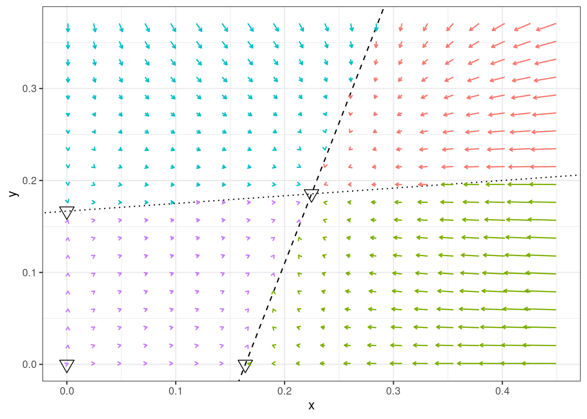
Having seen how to classify the equilibria using a graphical method, we show an analytical approach that can be used for an arbitrary number of populations.
Eigenvalues and eigenvectors
The product of a matrix and a vector is another vector:
\[ A x = b \]
Each matrix is associated with certain special vectors such that:
\[ A v = \lambda v \] i.e., multiplying the vector with the matrix simply scales all the entries of the vector by a constant, \(\lambda\). When this is the case, we say that \(v\) is an eigenvector of \(A\), with associated eigenvalue \(\lambda\). Note that eigenvectors are defined up to a constant: if \(v\) is an eigenvector of \(A\), and \(w = \gamma v\), then:
\[ Aw = \gamma A v= \gamma \lambda v = \lambda w \]
Example
\[ A = \begin{pmatrix} 1 & 2\\ 4 & 3 \end{pmatrix}\quad v = \begin{pmatrix} 1\\ 2 \end{pmatrix}\quad Av = \begin{pmatrix} 5\\ 10 \end{pmatrix} = 5 v \]
Then \(v= (1,2)^T\) is an eigenvector of \(A\) with eigenvalue \(\lambda = 5\).
Eigendecomposition
A matrix \(A\) is called diagonalizable if there exists an invertible matrix \(P\) such that \(PAP^{-1} = D\), where \(D\) is a diagonal matrix, i.e., having nonzero values only on the diagonal.
A diagonalizable matrix can be written as:
\[ A = Q \Lambda Q^{-1} \]
where each of the columns of \(Q\) is an eigenvector of \(A\), and \(\Lambda\) is a diagonal matrix with the corresponding eigenvalues. This factorization (writing a matrix as a product of other matrices) is called the eigendecomposition of \(A\).
You can see that:
\[ \begin{aligned} A v &= \lambda v\\ A Q &= Q \Lambda\\ A &= Q \Lambda Q^{-1} \end{aligned} \]
The trace of a matrix is the sum of the diagonal entries; it is also the sum of the eigenvalues:
\[ \text{Tr}\, A = \sum_i A_{ii} = \sum_i \lambda_i \]
The determinant of a matrix is the product of its eigenvalues (and thus a singular matrix has at least one zero eigenvalue):
\[ \det A = \prod_i \lambda_i \]
A diagonalizable matrix of size has \(n\) eigenvalues (not necessarily distinct) and \(n\) corresponding eigenvectors. The number of nonzero eigenvalues is the rank of the matrix.
Computing the eigenvalues of a matrix is very involved, and can be done analytically only for small matrices. The eigenvalues of \(A\) are the zeros of the characteristic polynomial:
\[ \det (A - \lambda I) = p(\lambda) \]
A matrix with real entries has eigenvalues that are either real, \(\lambda_i = \alpha\), or complex, \(\lambda = \alpha + i \beta\); the complex root are paired: \(\lambda_{i,j} = \alpha \pm i \beta\) (complex conjugate eigenvalues). A symmetric matrix \(A = A^T\) has only real eigenvalues; a skew-symmetric matrix \(A = -A^T\) has only eigenvalues with real part zero.
The diagonal matrix \(D(\alpha)\) has eigenvalues \(\alpha\).
The eigenvalues of the inverse \(A^{-1}\) are the reciprocals of the eigenvalues of \(A\): if \(A\) has eigenvalue \(\lambda\), then \(A^{-1}\) has eigenvalue \(1/\lambda\). The eigenvectors of \(A\) and \(A^{-1}\) are the same. The transpose \(A^T\) has the same eigenvalues of \(A\); its eigenvectors are \(A^T = (Q \Lambda Q^{-1})^T = {Q^{-1}}^T \Lambda Q^T\)
If a matrix has only positive, real eigenvalues it is positive definite, if it has only nonnegative eigenvalues it is positive semi-definite; if it has only negative eigenvalues it is negative definite.
If \(A\) is positive definite, then
\[ \sum_i \sum_j A_{ij} x_i x_j = x^T A x > 0 \quad \forall x \neq 0 \]
If \(A\) is symmetric, then it can be decomposed as:
\[ A = A^T = Q \Lambda Q^T \]
i.e., in this case \(Q^{-1} = Q^T\).
Finding eigenvalues for \(2\times2\) matrix
The matrix
\[ A = \begin{pmatrix} a & b\\ c & d \end{pmatrix} \]
has \(\text{Tr}\, A = a+ d\) and \(\det A = ad - bc\). Then:
\[ \begin{cases} \lambda_1 + \lambda_2 = a + d\\ \lambda_1 \lambda_2 = ad - bc \end{cases} \]
and thus
\[ \lambda = \dfrac{a + d \pm \sqrt{4bc + (a-d)^2}}{2} =\dfrac{1}{2}\left(\text{Tr}{A} \pm \sqrt{(\text{Tr}{A})^2 - 4 \det A} \right) \]
The eigenvectors can be found by setting one of the entries to an arbitrary value (e.g., \(v_1 = 1\)), and solving the equations:
\[ Av = \lambda v \]
In R, you can compute the eigenvalues and eigenvectors of a matrix \(A\) as eA <- eigen(A); the function returns a list with the matrix of eigenvectors stored in eA$vectors and the vector of eigenvalues in eA$values.
Local stability
In the previous lectures, we have approximated the behavior of \(f(x)\) around the equilibrium, to determine whether small perturbations would be buffered by the system. We can perform the same type of analysis here. However, now \(dx_i / dt = f_i(x)\) is a function of multiple populations, and therefore we need to Taylor-expand multivariate functions.
In analogy with the Talyor-expansion of functions of a single variable, we can write:
\[ f_i(x^\star + \Delta x) = f_i(x^\star) + \sum_k \left. \dfrac{\partial f_i(x)}{\partial x_k} \right|_{x^\star} \Delta x_k + \dfrac{1}{2} \sum_{k}\sum_{l} \left. \dfrac{\partial^2 f_i(x)}{\partial x_k \partial x_l} \right|_{x^\star} \Delta x_k \Delta x_l + \cdots \] As before, \(f_i(x^\star) = 0\), and if we take only the second term (i.e., the term linear in \(\Delta x\)) we can approximate the function as:
\[ f_i(x^\star + \Delta x) \approx \sum_k \left. J_{ik} \right|_{x^\star} \Delta x_k \]
Where we have defined the Jacobian matrix \(J\):
\[ J_{ij} = \dfrac{\partial f_i(x)}{\partial x_j} \] For each equilibrium in the system, we can obtain a different community matrix (the name is due to Levins) \(M\):
\[ M = \left. J \right|_{x^\star} \]
As such, a system of ODEs has a single Jacobian, and as many community matrices as there are equilibria. As before, we assume that we have slightly perturbed the system at equilibrium, \(x(t) = x^\star + \Delta x\), where \(\Delta x\) is assumed to be small, and then we approximate the dynamics:
\[ \dfrac{d\Delta x}{dt} \approx \left. J \right|_{x^\star} \Delta x \]
i.e., we need to solve a linear system of ODEs.
Solving systems of linear ODEs
Consider the system of first-order, autnonomous ODEs:
\[ \dfrac{dx}{dt} = Ax \]
If the matrix \(A\) is diagonalizable, we can decompose the matrix as:
\[ A = Q \Lambda Q^{-1} \]
We define a new system of equations, by changing the variables:
\[ y = Q^{-1}x\quad x = Q y \]
Then, by chain rule:
\[ \dfrac{dy}{dt} = Q^{-1} \dfrac{d x}{dt} = Q^{-1}Q \Lambda Q^{-1} x= \Lambda Q^{-1} x = \Lambda y \]
We have decoupled all equations: now the \(y_i\) grow or decline independently of each other.
\[ \dfrac{dy_i}{dt} = \lambda_i y_i \]
This is in fact the equation for the exponential growth/decay, with solution \(y_i(t) = y(0) e^{\lambda_i t}\).
We can bring these solutions back to the original form:
\[ y(t) = e^{\Lambda t} y(0) \]
where \(e^\Lambda t\) is a diagonal matrix:
\[ e^{\Lambda t}= \begin{pmatrix} e^{\lambda_1 t} & 0 & \cdots &0\\ 0 & e^{\lambda_2 t} & \cdots &0\\ \cdots & \cdots & \cdots & \cdots\\ 0 & 0 & \cdots & e^{\lambda_n t}\\ \end{pmatrix} \]
Then:
\[ x(t) = Q y(t) = Q e^{\Lambda t} y(0) = Q e^{\Lambda t} Q^{-1} x(0) \]
Allowing to easily compute the solution for any linear systems of ODEs.
Stability of the origin
Suppose that \(\lambda_i\) is a real, negative number; then \(\lim_{t \to \infty}e^{\lambda_i t} = 0\). If \(\lambda_i\) is positive, on the other hand, then \(\lim_{t \to \infty}e^{\lambda_i t} = \infty\). Thus, if any of the \(\lambda_i > 0\), the system will move to \(\infty\) in the direction specified by the corresponding eigenvector.
Whenever \(\lambda_i\) is complex (e.g., generically, when \(A\) is not symmetric), then we need to consider:
\[ e^{\alpha t + i \beta t} = e^{\alpha t} e^{i \beta t} = e^{\alpha t} (\cos \beta + i \sin \beta )t \]
where we have used Euler’s formula. Importantly, \((\cos \beta + i \sin \beta )\) is bounded, and in fact its real (imaginary) part is \(\leq 1\) (the equation describes a unit circle in the complex plane). Then, \(\lim_{t \to \infty} e^{\alpha t + i \beta t} = 0\) if \(\alpha < 0\).
Therefore, the vector \(0_n\) is an asymptotically stable equilibrium of the system \(\dfrac{dx}{dt} = A x\) if and only if all the eigenvalues of \(A\) have negative real part.
Stability of the origin for \(A_{2 \times 2}\)
As we have shown above, the eigenvalues of a \(2\times2\) matrix \(A\):
\[ A = \begin{pmatrix} a & b\\ c & d \end{pmatrix} \]
are:
\[ \lambda = \dfrac{a + d \pm \sqrt{4bc + (a-d)^2}}{2} \]
We can rewrite the values as:
\[ \lambda = \dfrac{1}{2} \left(\text{Tr}A \pm\sqrt{\left(\text{Tr}A \right)^2 - 4 \det A} \right) \]
If the trace is negative, and the determinant positive, then the eigenvalues have negative real part, and thus the origin is stable for the corresponding system of linear ODEs. In fact, knowing the trace and the determinant is in this case sufficient to determine the type of dynamics around equilibrium:

To probe the local asymptotic stability of the equilibria, we can:
- Calculate the Jacobian matrix, \(J\)
- Plug in an equilibrium, obtaining the corresponding community matrix \(M\)
- Compute the eigenvalues of \(M\), \(\lambda_i\)
- If all the eigenvalues have negative real part, \(\Re (\lambda_i) < 0\), then the equilibrium is locally asymptotically stable; if any \(\Re (\lambda_i) > 0\), then the equilibrium is unstable, and there are small perturbations that will amplify
For example, for the system above, we have:
\[ \begin{cases} f_x(x,y) = x- x^2 - A_{12}xy \\ f_y(x,y) = \rho y - A_{21} xy - y^2 \end{cases} \]
\[ J = \begin{pmatrix} (1 - 2 x - A_{12} y) & -A_{12} x\\ -A_{21} y & (\rho - 2 y - A_{21} x) \end{pmatrix} \] For \((x^\star, y^\star) = (0,0)\), we obtain:
\[ M = \begin{pmatrix} 1 & 0\\ 0 & \rho \end{pmatrix} \]
with eigenvalues \(1\) and \(\rho>0\): the equilibrium is unstable.
For the marginal equilibrium \((x^\star, y^\star) = (1,0)\), we obtain:
\[ M = \begin{pmatrix} -1 & -A_{12} \\ 0 & \rho - A_{21} \end{pmatrix} \]
The eigenvalues are \(-1\) and \(\rho - A_{21}\) and thus the equilibrium is stable whenever \(\rho < A_{21}\) and unstable when \(\rho > A_{21}\).
For the other marginal equilibrium \((x^\star, y^\star) = (0,\rho)\), we obtain:
\[ M = \begin{pmatrix} 1 - A_{12} \rho & 0\\ -A_{21} \rho & -\rho \end{pmatrix} \] with eigenvalues \(-\rho\) and \(1 - A_{12} \rho\). Thus, the equilibrium is stable whenever \(\rho > 1/A_{12}\) and unstable when \(\rho < 1/A_{12}\).
Finally, whenever a feasible equilibrium \((x^\star, y^\star) > (0,0)\) we have that the terms in parenthesis are zero. Thus \((1 - x^\star - A_{12} y^\star) = 0\) and \((\rho - y^\star - A_{21} x^\star) =0\), yielding:
\[ M = \begin{pmatrix} - x^\star & -A_{12} x^\star\\ -A_{21} y^\star & -y^\star \end{pmatrix} \]
The eigenvalues are:
\[ \lambda_{12} = \dfrac{1}{2}\left(-(x^\star+y^\star) \pm \sqrt{(x^\star-y^\star)^2 + 4 A_{12}A_{21} x^\star y^\star} \right) \]
Note that if \(A_{12}A_{21} = 1\), then we have that the eigenvalues are \(\frac{1}{2}(-(x^\star+y^\star) \pm (x^\star+y^\star))\), and thus one of them is zero. Hence, the equilibrium is stable as long as \(A_{12} A_{21} < 1\). One can also see that the term under the square root is always positive whenever \(A_{12} A_{21}>0\), and thus the eigenvalues are always real.
Exercise: LV with mutualistic interactions
Consider a LV model in which populations are facultative mutualists:
\[ \begin{cases} \dfrac{dx}{dt} = x(1 - x + \alpha y)\\ \dfrac{dy}{dt} = y(\rho - y + \beta x)\\ \end{cases} \]
- find all equilibria
- for which combination of parameters will the system have a coexistence equilibrium?
- compute the Jacobian matrix for the system, and the community matrices associated with each equilibrium
- classify the equilibria according to their local asymptotic stability
Lotka-Volterra predator-prey model
We have a prey who would grow exponentially when the predator is absent, and a predator that would decline exponentially when the prey is absent. The two species interact, thus allowing for their coexistence:
\[ \begin{cases} \dfrac{dX}{d\tau} = \rho X - \alpha X Y = X(\rho - \alpha Y)\\ \dfrac{dY}{d\tau} = -\delta Y + \beta X Y = Y(-\delta + \beta X) \end{cases} \]
where all parameters are positive. There are two equilibria: \((X, Y) = (0, 0)\) and \((X, Y) = \left(\frac{\delta}{\beta}, \frac{\rho}{\alpha} \right)\).
Nondimensionalization To simplify the equation (but maintain all its important features), we can define two new variables and a new time scale:
\[ x = c_1 X \quad y = c_2 Y \quad t = c_3 \tau \]
Using the new variables, we write:
\[ \begin{cases} \dfrac{c_1}{c_3}\dfrac{dx}{dt} = c_1 x(\rho - \alpha c_2 y)\\ \dfrac{c_2}{c_3}\dfrac{dy}{dt} = c_2 y(-\delta + \beta c_1 x) \end{cases} \]
and thus
\[ \begin{cases} \dfrac{dx}{dt} = x(c_3 \rho - \alpha c_2 c_3 y)\\ \dfrac{dy}{dt} = y(-c_3 \delta + \beta c_1 c_3 x) \end{cases} \]
It is convenient to take \(c_3 = 1/\rho\), \(c_2 = \rho / \alpha\), and \(c_1 = \rho / \beta\), thus simplifying the system to:
\[ \begin{cases} \dfrac{dx}{dt} = x(1 - y)\\ \dfrac{dy}{dt} = y(-\frac{\delta}{\rho} + x) = y(-\alpha + x) \end{cases} \]
We can therefore analyze the case in which we have only a single free parameter, \(\alpha = \rho / \delta > 0\). The equilibria are \((x^\star,y^\star) = (0,0)\) and \((x^\star, y^\star) = (\alpha, 1)\).
Isoclines of net zero growth. Clearly, the first equation is zero when either the prey is absent, or the predator is at \(y^\star = 1\); the second equation is zero when either the predator is absent or the prey is at \(x^\star = \alpha\); we can draw the two lines in a plane where we have \(x\) on the x-axis and \(y\) on the y-axis. The feasible (positive) equilibrium will be at the intersection of the two lines:
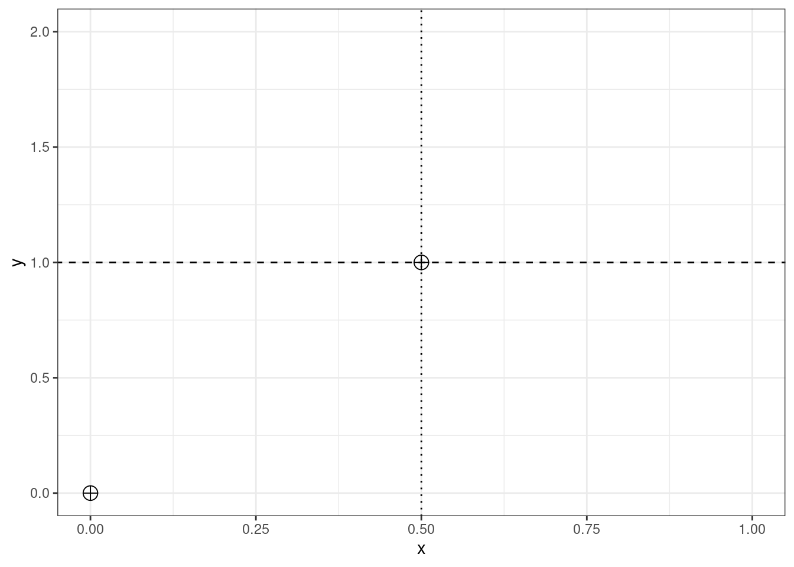
Direction of trajectories
We have four quadrants surrounding the positive equilibrium:
\(x < \alpha, y < 1\): in the bottom-left corner, we have \(dx/dt > 0\) and \(dy/dt < 0\); accordingly, the prey will grow and the predator decline
\(x > \alpha, y < 1\): in the bottom-right corner, we have \(dx/dt > 0\) and \(dy/dt > 0\); accordingly, both populations will grow
\(x > \alpha, y > 1\): in the top-right corner, we have \(dx/dt < 0\) and \(dy/dt > 0\); the prey will decline, the predator grow
\(x < \alpha, y > 1\): in the top-left corner, we have \(dx/dt < 0\) and \(dy/dt < 0\); both populations will decline
We can show these directions visually, by computing \((dx/dt, dy/dt)\) at different values of \((x, y)\):
We would like to characterize the stability of the equilibria. The trivial equilibrium \((0,0)\) is clearly unstable, because the arrows move away from it. The flow for the system cycles counter-clockwise around the coexistence equilibrium; stability cannot be determined because trajectories could spiral away from the equilibrium, spiral toward the equilibrium, or form closed orbits.
We therefore compute the Jacobian:
\[ J = \begin{pmatrix} 1-y & -x\\ y & x-\alpha \end{pmatrix} \]
Plugging \((x^\star, y^\star) = (0,0)\), we obtain:
\[ M = \begin{pmatrix} 1 & 0\\ 0 & -\alpha \end{pmatrix} \]
with eigenvalues \(\lambda = 1\) and \(\lambda = -\alpha\); the equilibrium is indeed unstable.
Plugging in the \((x^\star, y^\star) = (\alpha, 1)\), we obtain the matrix:
\[ M = \begin{pmatrix} 0 & -\alpha\\ 1 & 0 \end{pmatrix} \]
with purely imaginary eigenvalues \(\lambda = \pm \sqrt{-\alpha} = \pm i \sqrt{\alpha}\). Because the real part is exactly zero, we have what is called a “center”: trajectories around the equilibrium form closed orbits.
If we look at the trajectories, we see the amplitude of the orbits is determined by the initial conditions:
Constant of motion for LV predator-prey
We can write the dynamics for \(dx / dy\)—by chain rule:
\[ \dfrac{d x} {d y} = \dfrac{x(1-y)}{y(-\alpha + x)} = \dfrac{x - xy}{-\alpha y + xy} \]
The equation is separable:
\[ \begin{aligned} (-\alpha y + x y)d x &= (x-xy)dy\\ \left(-\dfrac{\alpha}{x} + 1 \right)dx &= \left(\dfrac{1}{y}- 1\right) dy\\ \int dx - \alpha \int \dfrac{1}{x}dx &= \int \dfrac{1}{y} dy - \int dy + \mathcal c\\ x - \alpha \log x &= \log y - y + \mathcal c\\ x + y - \alpha \log x - \log y &= \mathcal c \end{aligned} \]
At the initial conditions, we have that:
\[ \left.V(x, y)\right|_{(x_0, y_0)} = \left(x+y-\alpha \log x - \log y\right)|_{(x_0, y_0)} = c_0 \]
Taking the derivative w.r.t. time, we obtain:
\[ \begin{aligned} \dfrac{dV}{dt} &= \dfrac{dx}{dt} - \alpha \dfrac{1}{x}\dfrac{dx}{dt} + \dfrac{dy}{dt} - \dfrac{1}{y} \dfrac{dy}{dt}\\ &= (x - \alpha)(1-y)+ (y-1)(x-\alpha)\\ &=0 \end{aligned} \]
Thus, the quantity is conserved: it is a constant of motion. The curves described by the trajectories connect all the points in the phase plane for which \(x+y-\alpha \log x - \log y = c_0\).
Self-regulating prey
In the classic LV predator-prey model, the prey grows exponentially if not kept in check by the predator. If we include a term to have the prey growing logistically, we obtain:
\[ \begin{cases} \dfrac{dx}{dt} = x(1 - \epsilon x - y)\\ \dfrac{dy}{dt} = y(-\alpha + x) \end{cases} \]
We now have three equilibria: \((x^\star, y^\star) = (0,0)\), \((x^\star, y^\star) = (\frac{1}{\epsilon},0)\), and \((x^\star, y^\star) = \left(\alpha, 1 - \epsilon \alpha\right)\). Compute the community matrix for the coexistence equilibrium:
\[ J = \begin{pmatrix} (1 - 2 \epsilon x - y) & -x\\ y & x-\alpha \end{pmatrix} \]
Substituting the equilibrium:
\[ M = \begin{pmatrix} - \epsilon x^\star & -x^\star\\ y^\star & 0 \end{pmatrix} \]
The eigenvalues are now:
\[ \lambda = \dfrac{1}{2} \left(-\epsilon x^\star \pm \sqrt{(\epsilon x^\star)^2 - 4 x^\star y^\star} \right) \]
And thus have negative real part. Drawing the trajectories suggests global stability:
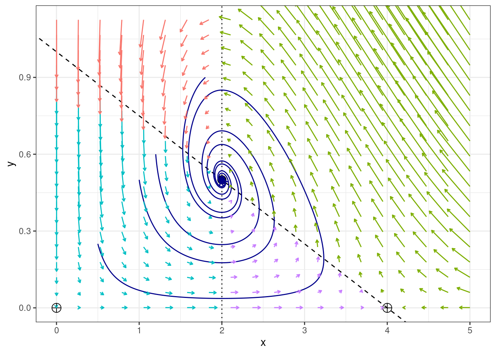
Global stability in LV
In 1977, BS Goh proposed a variation on the contant of motion found by Lotka and Volterra, that can be used as a Lyapunov function for the system to prove global stability. The function provides sufficient conditions, but not necessary conditions; i.e., if the function can be used to prove the stability of an equilibrium, the equilibrium is globally stable; however, there are cases in which the system is globally stable, and yet the function cannot be used to prove stability.
For two species, the function can be written as:
\[ V(x, y) = \left(x - x^\star - x^\star \log \dfrac{x}{x^\star}\right) + w \left(y - y^\star - y^\star \log \dfrac{y}{y^\star} \right) \]
where \(w>0\) can be chosen in the most convenient way. The function is always nonnegative and is zero only at equilibrium. Taking the derivative w.r.t time, we have:
\[ \dfrac{dV}{dt} = (x - x^\star) \dfrac{1}{x} \dfrac{dx}{dt} + w (y - y^\star)\dfrac{1}{y} \dfrac{dy}{dt} \]
If we can prove that \(dV/dt\) is always negative unless the system is at equilibrium, we have proven the global asymptotic stability of the equilibrium.
Example
For the predator-prey system with the prey growing logistically, with equilibrium \((x^\star, y^\star) = \left(\alpha, 1 - \epsilon \alpha\right)\) (and thus \(y^\star = 1 - \epsilon x^\star\)), we have:
\[ \begin{aligned} \dfrac{dV}{dt} &= (x - x^\star) (1 - \epsilon x - y) + w(y-y^\star)(x - \alpha)\\ &= (x - x^\star) (1 - \epsilon x - y) + w(y-y^\star)(x - x^\star)\\ &=(x - x^\star) (y^\star + \epsilon x^\star - \epsilon x - y) + w(y-y^\star)(x - x^\star)\\ &=-\epsilon (x - x^\star)^2 + (w-1)(x - x^\star)(y - y^\star) \end{aligned} \]
if we choose \(w = 1\), the function is negative unless \(x = x^\star\):
\[ \dfrac{dV}{dt} =-\epsilon (x - x^\star)^2 \]
but when this is the case, we have \(dy/dt = 0\), and thus \(y = y^\star\). The equilibrium is therefore globally asymptotically stable.
Exercise: Global stability for LV competition
Prove the global asymptotic stability of the coexistence equilibrium in the LV competition model above when \(1 < \rho / A_{21}\) and \(\rho < 1/A_{12}\).
Functional responses and the paradox of enrichment
We previously considered predator-prey interactions in which predation is proportional to the prey density, i.e.,
\[ \dfrac{dx}{dt} = x(r -a x) -\alpha xy \quad \dfrac{dy}{dt} = -m y + \beta \alpha \, xy \]
where \(\alpha\) the probability of “effective encounters” (from the predator’s perspective) per unit time, and \(\beta\) is the efficiency of converting prey to predators. The functional response is the rate at which predators capture prey. The model above shows a linear functional response, which is also known as a Holling type I functional response: there is a linear relationship between the number of prey eaten per unit time and the density of the prey.
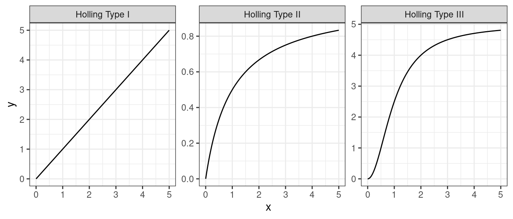
Ecologists have traditionally focused on three different functional responses, which were originally described by Crawford S. Holling (b. 1930). The Holling type II assumes predation saturates with higher prey density. This model is justified if we assume predation is limited by prey handling time. Let \(T\) be total time, \(T_{\text{h}}\) the handling time per prey item, and \(X\) the number of potential prey. We can model the number of prey caught, \(V\), as
\[ V= \alpha (T-VT_{\text{h}})X \]
where \(\alpha\) is a proportionality constant. The basic idea is that the number of prey caught is a function both of handling and searching time. Solving for \(V\), we obtain
\[ V=\frac{\alpha TX}{1+\alpha T_{\text{h}}X} \]
which can be rewritten more generally as
\[ f(X)= \frac{cX}{a+X} \]
where \(a\) is the half-saturation constant.
The Holling type III functional response is a sigmoidal curve. It has the form
\[ f(X)= \frac{cX^2}{a^2+X^2} \]
It assumes that predators are less efficient when prey density is low. At high prey density, their rate saturates.
Are the differences between these forms dynamically important? They can be. Assume we have two species, a predator (consumer) \(Y\) and resource (prey) \(X\) that are stably coexisting. Assume that predation follows the type II functional response, i.e., that it saturates at high prey densities. The equations can be written as:
\[ \begin{cases} \dfrac{dX}{d\tau} = rX\left(1-\dfrac{X}{K}\right)-\dfrac{cXY}{b+X}\\ \dfrac{dY}{d\tau} = -m Y + \dfrac{aXY}{b+X} \end{cases} \]
where \(r\) is the prey’s growth rate, \(K\) is the prey’s carrying capacity, \(m\) is the per capita mortality rate of the predator, and \(a\), \(b\), and \(c\) control the rate of predation and the conversion of prey into predators (efficiency).
We change variables to have fewer parameters:
\[ x = c_1 X \quad y = c_2 Y \quad t = c_3 \tau \] For example, choosing \(c_3 = 1/r\), \(c_1 = b\), \(c_2 = b r /c\), and defining: \(\alpha = a / r\), \(\beta = b / K\) and \(\delta = m/r\) we reduce the system to:
\[ \begin{cases} \dfrac{dx}{dt} = x \left(1 - \beta x - \dfrac{y}{1+x} \right)\\ \dfrac{dy}{dt} = y \left(- \delta + \dfrac{\alpha x}{1+x} \right)\\ \end{cases} \]
where all parameters are considered positive.
Equilibria
The system has up to three equilibria: \((x^\star, y^\star) = (0,0)\) (trivial equilibrium); \((x^\star, y^\star) = (1/\beta,0)\) (absence of the predator); \((x^\star, y^\star) = (\delta/(\alpha - \delta), \alpha(\alpha - (1 + \beta) \delta)/(\alpha - \delta)^2)\) (coexistence equilibrium). With some calculations, one can show that the coexistence equilibrium is in the positive orthant whenever:
\[ \alpha > \delta (1 + \beta) \]
Nullclines
As before, we can draw the nullclines. The equation for the prey is zero whenever either the prey is absent, or:
\[ y = - \beta x^2 + (1-\beta) x+1 \]
a downward facing parabola, intercepting the y-axis at \(1\), and the x-axis at \(1/\beta\). The prey grows at points below the curve, and declines at points above it.
The equation for the predator is zero when the predator is absent or whenever:
\[ x = \dfrac{\delta}{\alpha - \delta} \]
a vertical line, which is in the positive orthant when \(\alpha > \delta\).
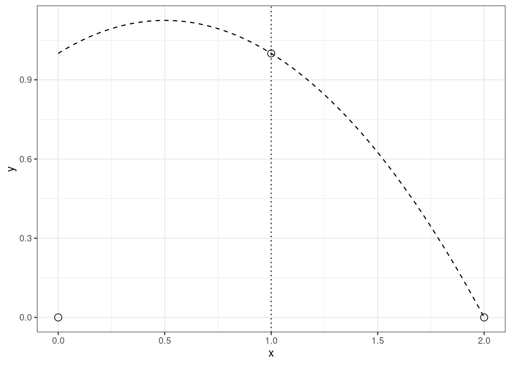
Jacobian matrix
We compute the Jacobian, obtaining:
\[ J = \begin{pmatrix} 1 - 2 \beta x - \dfrac{y}{(1+x)^2} & - 1 + \dfrac{1}{1+x}\\ \dfrac{\alpha y}{(1+x)^2} & -\delta + \dfrac{\alpha x}{1+x} \end{pmatrix} \] We first derive conditions for the stability of the coexistence equilibrium (when present):
\[ M = \begin{pmatrix} 2 \beta +\dfrac{(\beta +1) \delta }{\alpha } - \dfrac{2 \alpha \beta }{\alpha -\delta}& -\dfrac{\delta }{\alpha } \\ \alpha -(\beta +1) \delta & 0 \\ \end{pmatrix} \]
The determinant of \(M\) is always positive when the coexistence equilibrium exists:
\[ \det M = \dfrac{\delta (\alpha -(\beta +1) \delta )}{\alpha } > 0 \quad \text{if}\, \alpha > \delta (1 + \beta) \]
The trace of the matrix, however, can be positive or negative depending on the parameter values:
\[ \text{Tr}M = 2 \beta +\dfrac{(\beta +1) \delta }{\alpha } - \dfrac{2 \alpha \beta }{\alpha -\delta} < 0\quad \text{if}\, \alpha> \delta (1 + \beta)\, \text{and}\, \alpha -\delta < \beta (\alpha + \delta) \]
Thus, the stability depends on the carrying capacity, \(1/\beta\). Specifically, increasing the carrying capacity (“enrichment”–subsidizing the prey) causes the equilibrium to move from stable to unstable.
Similarly, changes in the mortality \(\delta\) or the efficiency of transformation \(\alpha\),can also push the equilibrium from stable to unstable—specifically, to a limit cycle.
For example, let’s look at a case in which the equilibrium is stable:
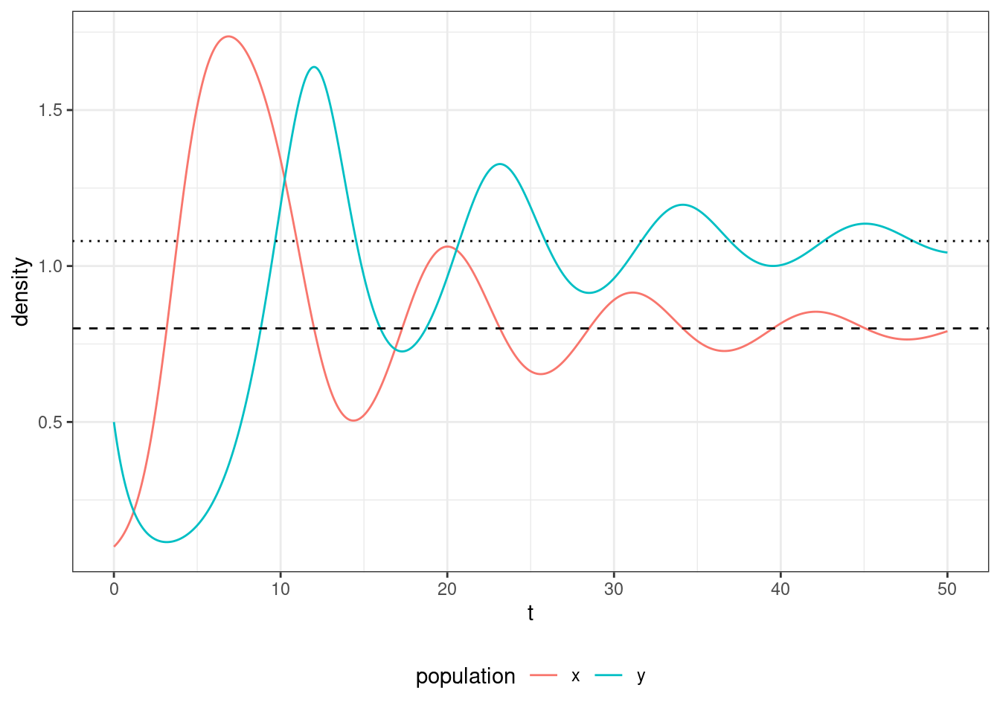
Trajectories converge to the equilibrium with dampened oscillations.
Now a case in which the interior equilibrium is unstable:
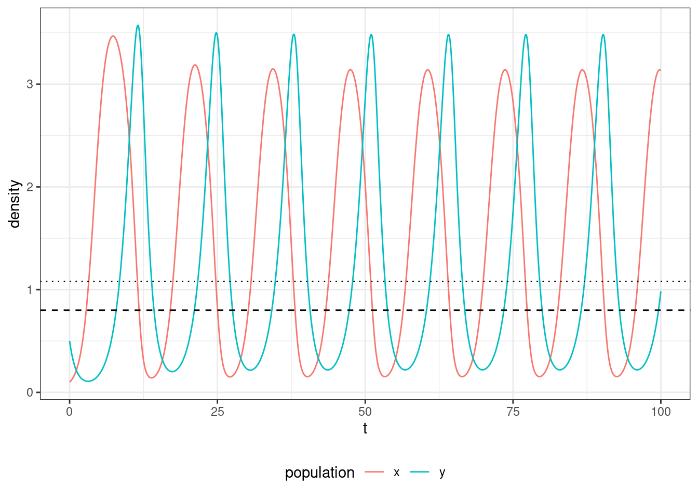
i.e., dynamics converge to a stable limit cycle. This is easier to see in the phase plane:
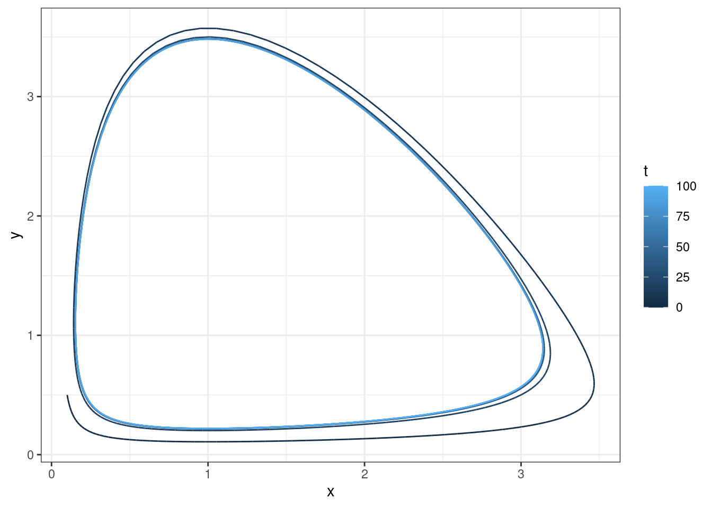
With oscillations, both the predator and prey can approach zero. If the prey goes extinct first, both will die out. Alternatively, the predator may go extinct first, and the prey will settle at its carrying capacity. The “paradox of enrichment” was first described by Michael Rosenzweig (b. 1941) in 1971. It demonstrates that the functional form of predation can have important dynamical consequences.
Discrete-time: Nicholson-Bailey model
This is a model for host-parasitoid dynamics. Parasitoids are typically insects whose larvae develop inside an host, usually killing the host when they emerge. The model assumes that hosts are randomly distributed with density \(H_t\), parasitoids search for hosts with efficiency \(a\). Each parasitized host at time \(t\) will produce one parasitoid at time \(t+1\). Each non-parasitized host gives rise to \(R>1\) new hosts at time \(t+1\). The probability of a host escaping an encounter with a parasitoid is \(e^{-aP_t}\). This gives us a simple model:
\[ \begin{cases} H_{t+1}=RH_t e^{-aP_t}\\ P_{t+1}=H_t \left(1- e^{-aP_t} \right) \end{cases} \]
We could assume that parasitoids lay \(c\) eggs in hosts that survive to become parasitoids, which would yield \(P_{t+1}=cH_t(1- e^{-aP_t})\), but we’ll let \(c=1\). All the parameters are positive.
Fixed points
We want to find points for which:
\[ \begin{cases} H_{t+1}=H_t=H^\star\\ P_{t+1}=P_t =P^\star \end{cases} \]
First, we can see that \((H^\star, P^\star) = (0, 0)\) is a trivial equilibrium. Then, if the predator is absent we have \(H^\star = R H^\star\), which happens only if \(R = 1\). If the predator is present, we have that at equilibrium \(H^\star = R H^\star e^{-aP^\star}\) and thus
\[ \begin{aligned} 1 &= R e^{-a P^\star}\\ 0 &= \log R - a P^\star\\ P^\star &= \dfrac{\log R}{ a} \end{aligned} \] meaning that the parasitoid can reach a positive equilibrium only when \(R > 1\). If this is the case, the equilibrium for the host is:
\[ \begin{aligned} \dfrac{\log R}{a} &= H^\star \left(1 - \dfrac{1}{R}\right)\\ H^\star &= \dfrac{R\log R}{a(R-1)} \end{aligned} \]
Stability analysis
Stability of discrete-time systems
We consider \(x_t\), a vector containing the population densities, and we have \(x_{t+1} = f(x_t)\), where each entry of \(f(x_t)\), \(f_i(x_t)\) is a function describing the dynamics of population \(i\). As done before, we want to evaluate the asymptotic stability of equilibria, i.e., vectors at which \(f({x}^\star) = x^\star\).
We take a perturbation of the equilibrium \(x_t = {x}^\star + p_t\), and we Taylor-expand each \(f_i(x_t)\) around this point. Taking only the first two terms we find:
\[ \begin{aligned} f_i(x^\star + p_t) &\approx f_i(x^\star) + \sum_j \left.\dfrac{\partial f_i}{\partial x_j}\right|_{x^\star}(x_j^\star + {p_j}_t - x_j^\star)\\ &\approx x_j^\star + \sum_j \left. J_{ij} \right|_{x^\star}{p_j}_t \end{aligned} \]
Which we can write in matrix form:
\[ \begin{aligned} x_{t + 1} &= f(x_t)\\ x^\star + p_{t+1} &= f(x^\star + p_t)\\ x^\star + p_{t+1} &\approx x^\star + \left. J\right|_{x^\star} p_t\\ p_{t+1} &\approx Mp_t \end{aligned} \]
Where \(M\) again is the community matrix, and we have obtained a linear system in discrete time. Naturally, we can iterate:
\[ p_{t+2} = Mp_{t+1} = MMp_t= M^2p_t \]
and in general
\[ p_{t+n} = M^{n} p_t \]
If the equilibrium is stable, eventually \(p_{t+n} = 0_n\), i.e., the perturbation will die out.
Consider the real number \(a\). We have that:
\[ \begin{aligned} \lim_{n \to \infty} |a|^n &= 0 & \text{iff} \quad |a| < 1\\ \lim_{n \to \infty} |a|^n &= \infty & \text{iff} \quad |a| > 1 \end{aligned} \]
A similar result is found for matrices, but instead of taking the absolute value of the real number, we need to consider the spectral radius of the matrix, i.e., the largest modulus (absolute value) of its eigenvalues. An eigenvalue is in general a complex number \(\lambda = \alpha + i \beta\). Its modulus is \(|\lambda|= \sqrt{\alpha^2 + \beta^2}\). We then have that the spectral radius \(\rho(A) = \max |\lambda_i|\), where \(\lambda_i\) are the eigenvalues of \(A\).
Then
\[ \lim_{n \to \infty}A^n = 0_{n \times n} \quad \text{iff } \, \rho(A) < 1 \] As such, an equilibrium \(x^\star\) is asymptotically stable if the associated community matrix \(M\) has spectral radius \(\rho(M) < 1\).
For a \(2 \times 2\) matrix, we have that \(\text{Tr} A = t\) and \(\det A = d\); then
\[ \lambda = \dfrac{1}{2} \left(t \pm \sqrt{t^2 - 4d} \right) \]
There are two cases:
- when \(t^2 < 4d\), both eigenvalues are complex: \(\lambda_1 = \frac{1}{2} (t + i \sqrt{4d -t^2})\) and \(\lambda_2 = \frac{1}{2} (t - i \sqrt{4d -t^2})\); but then \(\rho(A)^2 = \Re(\lambda_i)^2 + \Im(\lambda_i)^2 = \lambda_i \lambda_2 = \det A\), meaning that the condition for stability is simply \(0<\det A < 1\). Combined with \(t^2 < 4d\), yielding \(|t| < 2 \sqrt{d} < 2\), we obtain:
\[ |\text{Tr}A| - 1< \det A < 1 \]
- when \(t^2 > 4d\) both eigenvalues are real, and thus the spectral radius is \((|t|+\sqrt{t^2 -4d})/2\), which is less than one if \(|t|-1 < d\) (from \(|t| - 2 > \sqrt{t^2 - 4d}\), \(t^2 - 4 |t| + 4 > t^2 - 4d\)). Combining this condition with \(|t| <2\), we have \(t^2 < 4\) and thus \(d < 1\), obtaining the same formula as above.
As done before, we can characterize the dynamics around the equilibrium point for a 2-dimensional system:
- \(0<\lambda_1<1<\lambda_2\; \implies\) Saddle (unstable)
- \(0<\lambda_1<\lambda_2<1\; \implies\) Stable node
- \(\lambda_2>\lambda_1>1\; \implies\) Unstable node
- \(\lambda=a \pm ib, \; |\lambda|<1, \; b \neq 0\; \implies\) Stable spiral
- \(\lambda=a \pm ib, \; |\lambda|>1, \; b \neq 0\; \implies\) Unstable spiral
- \(\lambda=a \pm ib, \; |\lambda|=1, \; b \neq 0\; \implies\) Center
- \(-1< \lambda_1<0, \; \lambda_2<-1\; \implies\) Oscillatory saddle (unstable)
- \(\lambda_1>1, \; \lambda_2>-1\; \implies\) Oscillatory source (unstable)
For the Nicholson-Baley model, the Jacobian is:
\[ J = \begin{pmatrix} R e^{-a P} & -a R H e^{-a P}\\ 1 - e^{-a P} & H a e^{-aP} \end{pmatrix} \]
The community matrix is therefore:
\[ M = \begin{pmatrix} 1 & -\dfrac{R \log R}{R-1} \\ \dfrac{R-1}{R} & \dfrac{\log (R)}{R-1} \\ \end{pmatrix} \] the determinant of \(M\) is
\[ \det M = \dfrac{R \log R}{R -1} \]
Remember that to have a coexistence equilibrium we need \(R>1\). The determinant of \(M\) is greater than 1 if
\[ \begin{aligned} R \log R &> R-1\\ -\log \dfrac{1}{R} &> 1 - \dfrac{1}{R}\\ \log r &< r - 1 \end{aligned} \] where \(r = 1/R\). The inequality is met for any \(r > 0\) besides \(r = 1\). Hence, the equilibrium is always unstable.
Exercise: Spatial Nicholson-Bailey model (Long!)
We have studied the “mean field” Nicholson-Bailey model:
\[ \begin{aligned} H_{t+1}&=R\,e^{-aP_t}H_t\\ P_{t+1}&=c\left(1-e^{-aP_t}\right)H_t \end{aligned} \]
We now want to extend it to a \(N \times N\) lattice, i.e., a grid in which in each cell we have local dynamics, and we allow neighboring cells to exchange individuals. The lattice is periodic, i.e., the top and the bottom boundaries of the grid are coincident, the right and the left boundaries are coincident, so that the system runs on a torus – a donut-shaped surface.
We write the dynamics for the density of the host and the parasitoid in each cell (\(H_{ij}\) and \(P_{ij}\)):
\[ \begin{aligned} H_{{ij}_{t+1}} &= R\,e^{-a \tilde{P}_{{ij}_t}} \tilde{H}_{{ij}_t}\\ P_{{ij}_{t+1}} &= c(1-e^{-a \tilde{P}_{{ij}_t}}) \tilde{H}_{{ij}_t} \end{aligned} \]
where
\[ \tilde{H}_{{ij}_t}=(1-d_h)H_{{ij}_t} +\frac{d_h}{8} \sum_{\text{neighbors}\, k,l}H_{{kl}_t} \]
the sum is taken across the 8 nearest neighbors of the cell \({i,j}\). The parameter \(d_h\) is the dispersal rate of the host. Similarly,
\[ \tilde{P}_{{ij}_t} =(1-d_p) P_{{ij}_t}+\frac{d_p}{8} \sum_{\text{neighbors}\, k,l} P_{{kl}_t} \]
Start with a \(51 \times 51\) lattice, and set the density of host and parasites to zero everywhere but in cell \(26,26\), where \(H_{26,26}(0)=4\) and \(P_{26,26}(0)=1\). Set \(d_h=p_h=0.1\), \(R=2.0\), \(a=c=1.0\). Evolve the system for 1000 time steps and plot the density of host using image every 5 time steps (Note: R is really poor for doing animations. If you plot every time step and have a fast enough computer, you will get a nice “photosensitive epilectic seizure effect”).
Implementation
There are at least three strategies to code the model. At each time step, we have to have the matrices for \(H\) and \(P\) at time \(t\) and use these to build the matrices at time \(t+1\). Then we can overwrite the matrices and repeat. The main problem is how to deal with the neighbors. We can:
Compute the neighbors on the fly. This is very easy to implement (just remember that when a cell is at the border it disperses on the other side of the lattice). However, in
Rit is likely to be extremely slow.Store all the neighbors. Basically, you can have a matrix of \((N^2)\times 8\) in which for every cell you store the neighbors. This is going to require some memory, but it should pay off in terms of speed.
Build a large matrix \((N^2)\times (N^2)\) in which for each cell we have the dispersal rate to any other cell. The good point is that then the whole model becomes simple matrix multiplication, but it requires a lot of memory to store an enormous matrix whose elements are going to be 0 most of the times.
Other solutions…
R Tips for Spatial Nicholson-Bailey
Here’s the code that you could write using implementation 1. Choose any of the other method to implement your own code.
# list the coordinates of the eight neighboring cells to a
# particular cell of interest
neighboring_cells <- function(ii, jj, N){
# This is tedious to write, but fast to run
my_neighbors <- matrix(0, 8, 2)
my_neighbors[1,] <- c(ii+1, jj+1)
my_neighbors[2,] <- c(ii+1, jj)
my_neighbors[3,] <- c(ii+1, jj-1)
my_neighbors[4,] <- c(ii, jj+1)
my_neighbors[5,] <- c(ii, jj-1)
my_neighbors[6,] <- c(ii-1, jj-1)
my_neighbors[7,] <- c(ii-1, jj)
my_neighbors[8,] <- c(ii-1, jj+1)
# Wrap the lattice by replacing off-grid elements with
# the first index on the opposite side of the grid
my_neighbors[my_neighbors == 0] <- N
my_neighbors[my_neighbors == N+1] <- 1
return(my_neighbors)
}
# Run the spatial Nicholson-Bailey model, staring with initial
# matrices of host and parasitoid counts/locations H0 and P0,
# dispersal rates dh and dp, host growth rate R, parasitoid
# reproductive rate c, and parasitoid search efficiency a. The
# remaining parameters set the number of time steps to take and
# a logical flag for whether to plot the results or not.
spatial_nicholson_bailey <- function(H, P, dh, dp, R, c, a,
n_time_steps, plot_graph){
# Extract size of (square) grid from matrix of populations
N <- nrow(H)
# For each time step
for (zz in 1:n_time_steps){
# Plot every 5 time steps (we use base plotting here
# because it is faster)
if (plot_graph == TRUE) if (zz %% 5 == 0) image(H)
# For each cell
for (ii in 1:N) {
for (jj in 1:N) {
# Find the neighbors
my_neighbors <- neighboring_cells(ii, jj, N)
# Calculate the equilibrium values for each
# cell based on its neighbors
HStar <- (1 - dh) * H[ii,jj] +
dh * sum(H[my_neighbors])/8
PStar <- (1 - dp) * P[ii,jj] +
dp * sum(P[my_neighbors])/8
# Update the matrices
H[ii,jj] <- R * HStar * exp(-a * PStar)
P[ii,jj] <- c * HStar * (1 - exp(-a * PStar))
}
}
}
return(0)
}
# Initialize the system
N <- 51
H <- matrix(0, N, N)
P <- matrix(0, N, N)
# put some hosts, parasitoids in the middle
H[round(N/2), round(N/2)] <- 4
P[round(N/2), round(N/2)] <- 1
# Run the system
spatial_nicholson_bailey(H, P, dh=0.2, dp=0.2, R=2, c=1, a=1,
n_time_steps=100, plot_graph=TRUE)Classic papers
The Lotka-Volterra predator-prey model was discovered independently by Alfred J. Lotka and Vito Volterra:
Alfred J. Lotka, 1920. Analytical Note on Certain Rhythmic Relations in Organic Systems. PNAS 6 (7) 410-415
Vito Volterra, 1926. Fluctuations in the Abundance of a Species Considered Mathematically. Nature 118:558-60
You can read their exchange here.
The constant of motion was derived by Lotka in 1920:
- Alfred J. Lotka, 1920. Undamped oscillations derived from the law of mass action. Journal of the American Chemical Society 42:1595-1599
Volterra considered many variations, including the competition between species. His results caught the eye of an experimentalist, who validated the principle of competitive exclusion using protozoans:
- G.F. Gause, 1934. Experimental Analysis of Vito Volterra’s Mathematical Theory of the Struggle for Existence. Science 79:16-17
The analysis of two-species competitive Lotka-Volterra inspired the so-called Modern Coexistence Theory:
- Chesson, P. 2000. Mechanisms of Maintenance of Species Diversity. Annual Review of Ecology and Systematics 31:343-366
On functional responses:
- Crawford S. Holling, 1959. Some Characteristics of Simple Types of Predation and Parasitism. The Canadian Entomologist 91:385-398
The paper proposing the paradox of enrichment:
- Rosenzweig, Michael, 1971. The Paradox of Enrichment. Science 171: 385–387
More on limit cycles in predator-prey systems:
Robert M. May, 1972. Limit Cycles in Predator-Prey Communities Science 177:900-902
Michael E. Gilpin, 1972. Enriched Predator-Prey Systems: Theoretical Stability Science 177:902-904
The Nicholson-Bailey model:
- A.J. Nicholson, V.A. Bailey, 1935. The Balance of Animal Populations. Part I. Proceedings of the Zoological Society of London. 105: 551–598
and its spatial version:
- H.N. Comins, M.P. Hassell, R.M. May, 1992. The Spatial Dynamics of Host–Parasitoid Systems. Journal of Animal Ecology 61:735-748